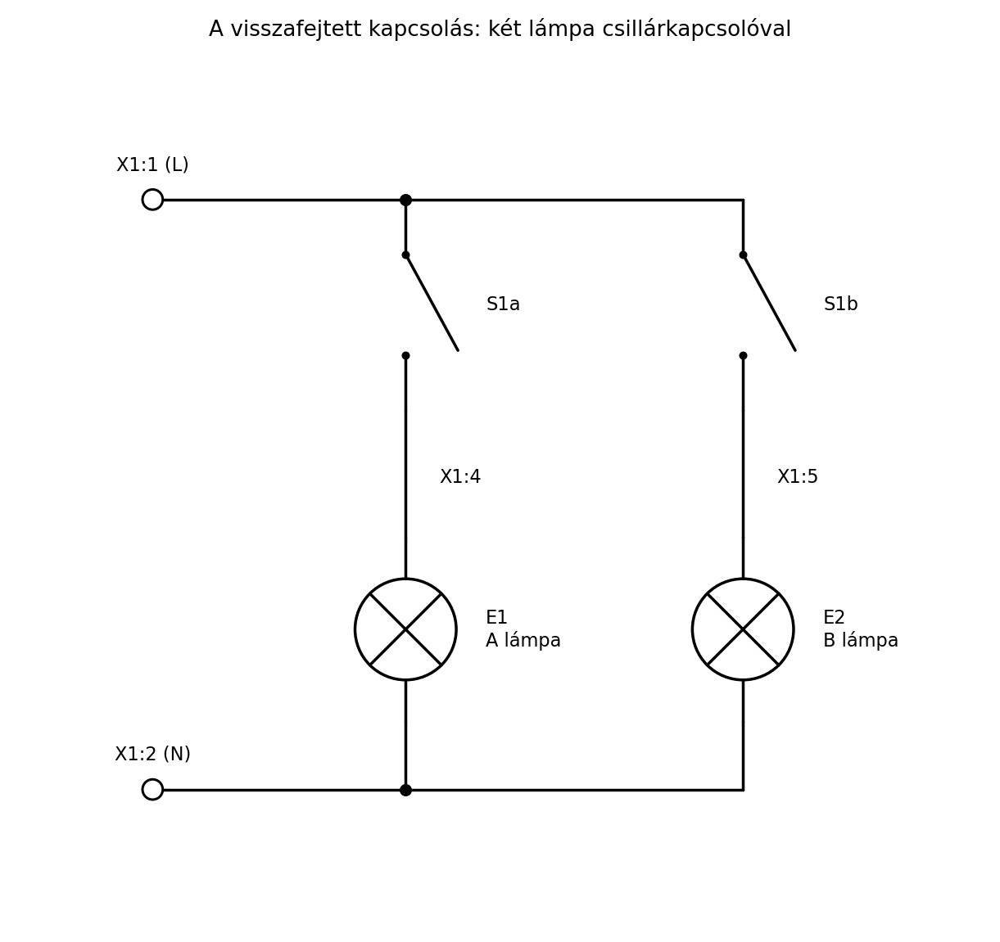

A kapcsolódó elmélet: tankönyv, 12.2 alfejezet.
Biztonsági korlát. Az alábbi feladat dokumentáció-készítésre vonatkozik. Ha a kapcsolást tanműhelyi környezetben meg is építed, azt legfeljebb törpefeszültségen, jogosult oktató felügyeletével végezd. Hálózati feszültségen önállóan ne dolgozz!
Ha mégis feszültségmentes, valós szerelést készítesz, mindig a feszültségmentesítés öt biztonsági szabálya szerint járj el:
Eszközök, anyagok: ceruza, radír, vonalzó, villamos rajzsablon, színes ceruzák vagy szoftver, kábelcímkék, sorkapocsterv-táblázat.
Lépések:
W1,
W2, W3, W4.W2 / kék (barnával jelölve, kapcsolt fázis) / -S2:1.Ellenőrzési pont. A huzalozási rajz akkor megfelelő, ha minden vezetéknek van azonosítója, minden kapocs meg van nevezve, és a kapcsolási rajzról egyértelműen leolvasható a kapcsolólogika.
Ezzel vesd össze a saját munkádat. Négy kábel fut a dobozba: W1 az elosztótól (NYM-J 3×1,5), W2 az S1 váltókapcsolóhoz (4×1,5), W3 az S2 váltókapcsolóhoz (4×1,5), W4 az E1 lámpához (3×1,5). Érszínek: BN barna, BK fekete, GY szürke, BU kék, GNYE zöld-sárga.
| Kábel | Ér | Honnan | Hová | Funkció |
|---|---|---|---|---|
| W1 | BN | elosztó (F1) | X1:1 | L, fázis |
| W1 | BU | elosztó (N-sín) | X1:2 | N |
| W1 | GNYE | elosztó (PE-sín) | X1:3 | PE |
| W2 | BN | X1:1 | S1:L | fázis a közös kapocsra |
| W2 | BK | S1:1 | X1:4 | 1. keresztág |
| W2 | GY | S1:2 | X1:5 | 2. keresztág |
| W2 | GNYE | X1:3 | S1 (PE, ha van) | PE |
| W3 | BN | S2:L | X1:6 | kapcsolt fázis a közös kapocsról |
| W3 | BK | X1:4 | S2:1 | 1. keresztág |
| W3 | GY | X1:5 | S2:2 | 2. keresztág |
| W3 | GNYE | X1:3 | S2 (PE, ha van) | PE |
| W4 | BN | X1:6 | E1:L | kapcsolt fázis |
| W4 | BU | X1:2 | E1:N | N |
| W4 | GNYE | X1:3 | E1:PE | PE |
A kötődoboz sorkapocsterve ugyanez a kapcsok felől nézve:
| Kapocs | Funkció | Becsatlakozó erek |
|---|---|---|
| X1:1 | L | W1 BN, W2 BN |
| X1:2 | N | W1 BU, W4 BU |
| X1:3 | PE | mind a négy kábel GNYE ere |
| X1:4 | 1. keresztág | W2 BK, W3 BK |
| X1:5 | 2. keresztág | W2 GY, W3 GY |
| X1:6 | kapcsolt fázis | W3 BN, W4 BN |
A W3 BN ere az állandó fázistól eltérően kapcsolt fázis, ezért mindkét végén jelöld meg (például jelölőhüvellyel: „↑”). A kapcsolón fém rész hiányában a PE-eret nem kötöd be a szerelvénybe, de a végét szigetelve, azonosíthatóan hagyod a dobozban (ellenőrizendő: MSZ HD 60364-5-54). A kapcsolók kapocsjelölése (L/1/2, COM és más) gyártófüggő (ellenőrizendő: a szerelvény kapocstáblája).
Ellenőrző mérés (feszültségmentesen, az öt biztonsági szabály után, a fényforrást kivéve): folytonosság az X1:1 és az X1:6 között a két kapcsoló négy állásában. „Fent”: a közös kapocs az 1-es, „lent”: a 2-es kapocsra zár.
| S1 | S2 | Elvárt mérés X1:1 – X1:6 |
|---|---|---|
| fent | fent | zár |
| fent | lent | szakadt |
| lent | fent | szakadt |
| lent | lent | zár |
1. feladat (A) Rajzold fel az egypólusú világítási kapcsolás kapcsolási rajzát: jelölj L1, N, S1 és E1 elemeket, és írd le az áramutat bekapcsolt állapotban.
2. feladat (A) Melyik rajzfajtát használod ahhoz, hogy megtudd, hol kell a falon a kapcsoló, és melyiket ahhoz, hogy megtudd, hány ér megy a kapcsolóhoz?
3. feladat (B) Egy váltó kapcsolásnál a fázis az első kapcsoló közösére érkezik, a második kapcsoló közöse pedig a lámpa fáziscsatlakozójára megy. Rajzold le a huzalozási kapcsolatot, és jelöld be a kapcsok egy lehetséges azonosítását!
4. feladat (B) Egy huzalozási rajzon az látható,
hogy a lámpához W3 kábel megy, a barna ér az
-X1:4 sorkapocsra, a kék ér az -E1:N, a
zöld-sárga ér az -E1:PE kapocsra csatlakozik. Milyen
funkciójú mérést végeznél feszültségmentesen annak ellenőrzésére, hogy a
barna ér valóban a lámpa fázispontjára megy?
5. feladat (C) Egy lépcsőházi világítási kapcsolásban három nyomógomb működtet egy impulzusrelét. Rajzold le a vezérlőáramkör elvi rajzát, és jelöld a párhuzamos kapcsolatot a nyomógomboknál. Mi történik, ha az egyik nyomógomb beragad?
6. feladat (D) Egy váltó kapcsolás hibás: a lámpa az egyik kapcsolóról bekapcsolható, a másikról nem. Milyen huzalozási hibára utalhat? Írd le a hibakeresési lépéseket feszültségmentes mérésekkel.
A jelölés mindenhol a mintamegoldásé: W kábelszám, X1 a kötődoboz sorkapcsa, S kapcsoló, E lámpa.
7. feladat (A) Az egypólusú kapcsolás (S1, E1) kapcsolási rajzából készíts huzalozási táblázatot központi kötődobozzal (W1 elosztó, W2 kapcsoló, W3 lámpa; mindhárom 3×1,5).
8. feladat (B) Csillárkapcsolás központi kötődobozzal: hány erű kábel kell az elosztó–doboz, a doboz–kapcsoló és a doboz–lámpa szakaszon? Indokold!
9. feladat (B) Rajzold le fejből a váltókapcsolás kapcsolási rajzát (a Világítási áramkörök: egypólusú, soros, váltó és kereszt (tankönyv, 16.2) alfejezet rajza szerint), majd a mintamegoldás eltakarásával töltsd ki az X1 sorkapocstervet (X1:1–X1:6).
10. feladat (B) Keresztkapcsolás két váltóval és egy keresztkapcsolóval: hány ér megy a keresztkapcsolóhoz, és hány sorkapocs kell a kötődobozban?
11. feladat (C) Visszafejtés. Egy dokumentálatlan kötődobozban ezt találod: W1 (elosztó) BN – X1:1, BU – X1:2; W2 (kapcsoló) BN – X1:1, BK – X1:4, GY – X1:5; W3 (A lámpa) BN – X1:4, BU – X1:2; W4 (B lámpa) BN – X1:5, BU – X1:2; minden zöld-sárga ér az X1:3-on. Rajzold meg a kapcsolási rajzot, és nevezd meg a kapcsolást!
12. feladat (C) Visszafejtés. A két kapcsolókábel (W2, W3) BK és GY ere ugyanarra az X1:4, illetve X1:5 kapocsra fut; a W2 BN ere az X1:1-en (fázis) van, a W3 BN ere az X1:6-on, ahonnan a lámpakábel indul. Milyen kapcsolás ez? Írd le az áramutat!
13. feladat (C) Impulzusrelés lépcsőházi kapcsolás (a fenti rajz szerint): a K1 impulzusrelé és az F1 vezérlőkör-védelem az elosztóban van, három nyomógomb (S1–S3) egy kötődobozon keresztül csatlakozik. Készíts huzalozási táblázatot! Hány ér megy egy-egy nyomógombhoz, és hol valósul meg a párhuzamos kötés?
14. feladat (D) Hibakeresés. A váltókapcsolás kapcsolási rajza helyes, a helyszíni huzalozási táblázat szerint viszont az S2-n a W3 BK ere (1. keresztág) az S2:L kapocsra, a W3 BN ere (a lámpa felé menő) pedig az S2:1 kapocsra került. Keresd meg az eltérést, add meg a tünetet a négy kapcsolóállásban, és a javítást!
Biztonsági korlát. A méréseket csak feszültségmentesen, tanműhelyben vagy jogosult személy felügyeletével végezd, az öt biztonsági szabály szerint: 1. lekapcsolás; 2. visszakapcsolás elleni biztosítás; 3. feszültségmentesség ellenőrzése; 4. földelés és rövidre zárás; 5. a szomszédos feszültség alatti részek lefedése. A fényforrás ki van véve.
A 15. és a 16. feladat váltókapcsolás; folytonosságmérés az X1:1 (L) és a lámpa felé menő W4 BN ér dobozbeli vége között („fent”/„lent” a mintamegoldás szerint).
| S1 | S2 | Elvárt | Mért (15.) | Mért (16.) |
|---|---|---|---|---|
| fent | fent | zár | zár | zár |
| fent | lent | szakadt | szakadt | zár |
| lent | fent | szakadt | szakadt | szakadt |
| lent | lent | zár | szakadt | szakadt |
15. feladat (C) Mi a hiba, hogyan ellenőrzöd, és hogyan javítod a „Mért (15.)” oszlop alapján?
16. feladat (D) Mi a hiba a „Mért (16.)” oszlop alapján, és hogyan javítod?
17. feladat (D) Csillárkapcsolás (W2: BN fázis, BK az X1:4-re, GY az X1:5-re); folytonosság az X1:1–X1:4 és az X1:1–X1:5 között:
| 1. billentyű | 2. billentyű | Elvárt X1:4 / X1:5 | Mért X1:4 / X1:5 |
|---|---|---|---|
| ki | ki | szakadt / szakadt | szakadt / szakadt |
| be | ki | zár / szakadt | zár / zár |
| ki | be | szakadt / zár | szakadt / szakadt |
| be | be | zár / zár | zár / zár |
Mi a hiba?
Önellenőrzés – válaszok
Feladatok megoldása
1. megoldás. A kapcsolási rajzon L1 a
fázis, S1 a kapcsoló, E1 a lámpa,
N a nulla. Bekapcsolt állapotban az áramút:
L1 → S1 → E1 → N.
2. megoldás. A szerelvények fizikai helyét a szerelési rajz, a kapcsolóhoz menő erek számát és bekötését a huzalozási rajz mutatja.
3. megoldás. Egy lehetséges ábrázolás: az első
kapcsoló S1:1 közös kapcsára kötjük az L1 fázist, az
S1:2 és S1:3 váltóérintkezőket összekötjük a
második kapcsoló S2:2 és S2:3
váltóérintkezőivel, majd a második kapcsoló S2:1 közös
kapcsát a lámpa fáziscsatlakozójához vezetjük. A lámpa másik
csatlakozója az N; a fém lámpatest a PE-re csatlakozik.
4. megoldás. Feszültségmentes állapotban a
multiméterrel folytonosságmérést végeznék: az
-X1:4 sorkapocs és a lámpafoglalat fázispontja között kis
ellenállást kell kapni, miközben a nulla és a PE ága más kapcsokra
azonosítható.
5. megoldás. A három nyomógomb egymással párhuzamosan van kötve, mindegyik az impulzusrelé tekercsére ad jelet. Ha egy nyomógomb beragad, a K1 impulzusrelé tekercse tartósan feszültséget kap: a relé az utolsó állapotában marad, a többi gomb hatástalan, és a nem tartós üzemre méretezett tekercs túlmelegedhet (ellenőrizendő: gyártói adatlap). Tünet: egyik gombbal sem kapcsolható a világítás, a relé melegszik vagy zümmög. Javítás: feszültségmentesítés (öt szabály) után a hibás gomb cseréje; az időrelés változatoknál gyakori a beragadt-gomb-figyelés funkció.
6. megoldás. Ha a lámpa csak az egyik kapcsolóról
kapcsolható, akkor valószínűleg az egyik váltó kapcsolón a közös kapocs
és egy keresztág fel van cserélve, vagy az egyik keresztág szakadt (a
keresztágak egymás közötti felcserélése nem hiba). Feszültségmentesítés
után ellenőrizni kell a kapcsolók kapocstábláját, majd
folytonosságméréssel azonosítani az S1 és S2
közötti keresztágakat. Ezután vissza kell kötni a kapocstábla szerint,
és működéspróbát végezni.
7. megoldás.
| Kapocs | Funkció | Erek |
|---|---|---|
| X1:1 | L | W1 BN (elosztó), W2 BN (→ S1:L) |
| X1:2 | N | W1 BU (elosztó), W3 BU (→ E1:N) |
| X1:3 | PE | W1, W2, W3 GNYE (→ E1:PE) |
| X1:4 | kapcsolt fázis | W2 BU, barnával jelölve (← S1:1), W3 BN (→ E1:L) |
8. megoldás.
| Szakasz | Kábel | Erek és indok |
|---|---|---|
| elosztó – doboz | 3G | L, N, PE: ennyi a táplálás |
| doboz – csillárkapcsoló | 4G | L a közös kapocsra, ↑1 és ↑2 vissza, PE |
| doboz – lámpa | 4G | ↑1, ↑2, N, PE: két fényforráscsoport, közös N |
A kapcsolóhoz N nem kell, a lámpához viszont igen. A „G” a zöld-sárga eret tartalmazó kábelt jelöli (a NYM-J típusjel „-J” tagja ugyanezt jelenti).
9. megoldás. A sorkapocsterv a mintamegoldásé: X1:1 – W1 BN, W2 BN; X1:2 – W1 BU, W4 BU; X1:3 – mind a négy GNYE; X1:4 – W2 BK, W3 BK; X1:5 – W2 GY, W3 GY; X1:6 – W3 BN, W4 BN.
10. megoldás. A keresztkapcsolóhoz 4 aktív ér (két bejövő és két kimenő keresztág) és a PE, vagyis 5G kábel megy. A dobozban 7 sorkapocs kell: L, N, PE, 2 + 2 keresztág és a kapcsolt fázis.
| Kapocs | Erek |
|---|---|
| L | elosztó, S1 közös |
| N | elosztó, lámpa |
| PE | minden kábel GNYE ere |
| 1. és 2. keresztág | S1 – S2 bemenő pár |
| 3. és 4. keresztág | S2 kimenő pár – S3 |
| kapcsolt fázis | S3 közös – lámpa |
11. megoldás. Csillárkapcsolás két külön lámpatesttel: a W2 BN a kapcsoló közös kapcsát táplálja, a BK az egyik billentyűn át az A, a GY a másik billentyűn át a B lámpát kapcsolja; a nullák közösek.

12. megoldás. Váltókapcsolás: két váltókapcsoló, a keresztágaik az X1:4 és X1:5 kapcson találkoznak.
| Kapocs | Erek | Szerep |
|---|---|---|
| X1:1 | W1 BN, W2 BN | fázis az S1 közös kapcsára |
| X1:4, X1:5 | W2 és W3 BK, illetve GY | a két keresztág |
| X1:6 | W3 BN, lámpakábel BN | kapcsolt fázis az S2 közös kapcsáról |
Áramút: L → X1:1 → S1 közös → X1:4 vagy X1:5 → S2 közös → X1:6 → lámpa → N. A kör akkor zárt, ha mindkét kapcsoló ugyanarra a keresztágra áll.
13. megoldás. Minden nyomógombhoz 2 aktív ér megy (fázis le, impulzus vissza); PE-ér a kábelben van, a szerelvénybe akkor kötöd, ha annak van fém, védővezetőre kötendő része (ellenőrizendő: MSZ HD 60364-5-54). A párhuzamos kötés a kötődobozban van (a gombok között hurkolt kábelezés is lehetséges, ha a terv azt írja elő).
| Kábel | BN | BK vagy BU (barnával jelölve) | GNYE |
|---|---|---|---|
| W0 elosztó – doboz | F1 → X1:1 | X1:2 → K1:A1 | PE-sín → X1:3 |
| W1 doboz – S1 | X1:1 → S1 | S1 → X1:2 | X1:3 |
| W2 doboz – S2 | X1:1 → S2 | S2 → X1:2 | X1:3 |
| W3 doboz – S3 | X1:1 → S3 | S3 → X1:2 | X1:3 |
A K1:A2 az elosztóban az N-re megy; a lámpakör (F2, K1 érintkező, lámpák) külön kábeleken fut.
14. megoldás. Az eltérés: az S2-n a közös kapocs és az 1. váltókapocs vezetéke fel van cserélve.
| S1 | S2 | Rajz szerint | Hibás bekötéssel |
|---|---|---|---|
| fent | fent | ég | ég |
| fent | lent | nem ég | nem ég |
| lent | fent | nem ég | nem ég |
| lent | lent | ég | nem ég |
A lámpa a négy állásból csak egyben ég. Ha az S2 „lent” állásban van, az S1 nem kapcsolja a lámpát (az S2 ilyenkor a két keresztágat köti össze egymással, a lámpa ere sehová sem csatlakozik). Javítás feszültségmentesen: W3 BN az S2:L, W3 BK az S2:1 kapocsra; utána az ellenőrző mérés mind a négy állásban, majd működéspróba.
15–17. megoldás – a gondolatmenet mindig ugyanaz: elvárt táblázat felírása, az eltérő sor megkeresése, hipotézis, ellenőrző mérés.
15. megoldás. Csak a „lent–lent” sor tér el, vagyis az az út hiányzik, amely a 2. keresztágon (X1:5) halad: a 2. keresztág szakadt. Ellenőrző mérés: folytonosság S1:2 – X1:5, majd X1:5 – S2:2; a szakadt szakaszon nincs átmenet. Javítás: laza kapocs meghúzása vagy a sérült ér, kábel cseréje, utána a négyállásos mérés megismétlése.
16. megoldás. Az eredményt csak az S1 állása határozza meg, az S2 hatástalan: a lámpa ere nem az S2 közös kapcsáról kap utat, hanem közvetlenül az 1. keresztágról. Tipikus ok: a dobozban a W4 BN ér az X1:6 helyett az X1:4 kapocsra került. Ellenőrző mérés: folytonosság a W4 BN és az X1:4 között mindkét kapcsolótól függetlenül. Javítás: a W4 BN ér átkötése az X1:6-ra.
17. megoldás. Az 1. billentyű mindkét kimenetet zárja, a 2. hatástalan: a W2 BK és a GY ere a kapcsolón ugyanarra a kimeneti kapocsra (az 1. billentyű kimenetére) került, a másik kimenet üres. Ellenőrző mérés: a kapcsoló kiszerelése után szemrevételezés, illetve folytonosság a két ér kapcsolófelőli vége között. Javítás: a GY ér átkötése a 2. billentyű kimenetére, majd a mérés megismétlése.
Kidolgozott példa (egypólusú kapcsolás kötődobozos huzalozása). Az alábbi táblázat azt mutatja, hogy egy központi kötődobozos szerelésnél melyik ér milyen funkciót kap.
| Kábel | Érszín | Jelölés | Kötődobozban csatlakozik |
|---|---|---|---|
| Elosztó felől | barna | L1 (fázis) | sorkapocs: fázis-gyűjtő |
| Elosztó felől | kék | N (nulla) | sorkapocs: nulla-gyűjtő |
| Elosztó felől | zöld-sárga | PE | PE-gyűjtő |
| Kapcsolóhoz | barna | fázis le | fázis-gyűjtővel összekötve |
| Kapcsolóhoz | kék, a végein barna jelöléssel | kapcsolt fázis vissza | lámpa felé menő fázis |
| Kapcsolóhoz | zöld-sárga | PE | PE-gyűjtő |
| Lámpához | barna | kapcsolt fázis | kapcsoló visszatérője |
| Lámpához | kék | N | nulla-gyűjtő |
| Lámpához | zöld-sárga | PE | PE-gyűjtő |
A bekötés során tehát a kapcsolóhoz lemenő barna ér viszi a fázist, a kék ér hozza vissza a kapcsolt fázist, a lámpa felé pedig a barna ér adja a kapcsolt fázist, a kék pedig a nullát.
Kidolgozott példa (hibakeresés váltó kapcsolásnál). Egy panasz szerint a lámpa csak az egyik kapcsolóról kapcsolható ki. A huzalozási rajz alapján először a kapcsolók kapcsait kell lemérni. Feszültségmentesítés után multiméterrel ellenőrizzük a két kapcsoló közötti két keresztág folytonosságát. A keresztágak egymás közötti felcserélése nem hiba: a váltókapcsolás működését nem rontja el, csak az „ég/nem ég” állás-párosítást fordítja meg. Ha az egyik kapcsolóról nem kapcsolható a lámpa, a tipikus ok, hogy valamelyik kapcsolón a közös kapocsra keresztág, a váltókapocsra pedig a fázis vagy a lámpa felé menő vezeték került, vagy az egyik keresztág szakadt. Mérés (feszültségmentesen, az öt szabály után): 1) a két keresztág folytonossága kapcsolótól kapcsolóig; 2) az elosztó felőli fázisér azonosítása az S1 közös kapcsán; 3) a lámpa felé menő ér azonosítása az S2 közös kapcsán. A javítás: feszültségmentes állapotban a vezetékeket a kapocstábla szerint visszakötni, majd működéspróbát végezni.
Példa. Ha egy huzalozási rajzon a W2
kábel barna erét az -S1:L kapocshoz, kék (barnával jelölt)
erét az -S1:1 kapocshoz rendeljük, akkor a szerelés során a
kapcsolóhoz menő kábel barna erét az S1 kapcsoló L, a jelölt kék erét az
1-es kapcsára kell csatlakoztatni (lásd az alábbi huzalozási rajzot). Ha
a későbbi mérésnél a -X1:4 és a lámpafoglalat fázispontja
között szakadást mérünk, azonnal tudjuk, hol keressük a hibát.